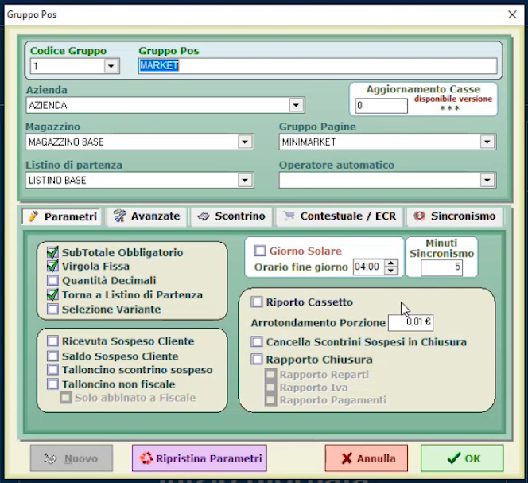
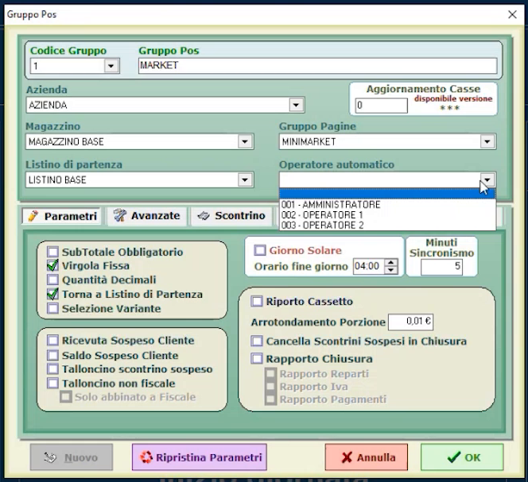
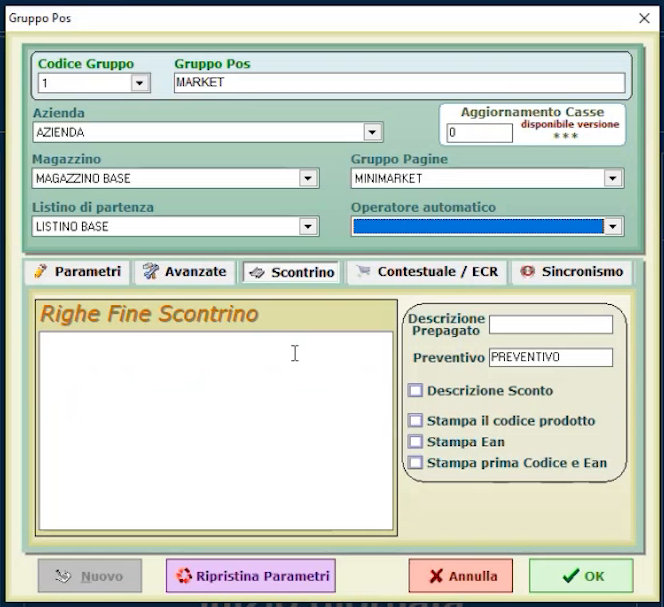
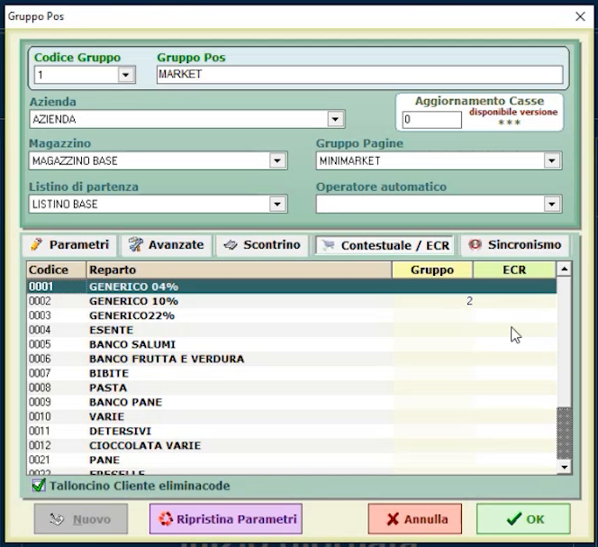
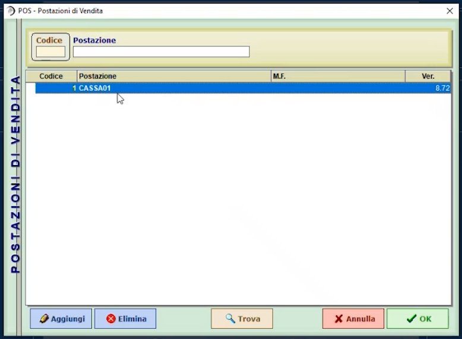
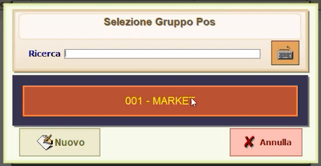

Parametri di barriera e gruppi POS
TARGET: tecnico installatore · DURATA STIMATA: 25 minuti
Obiettivo
Configurare il gruppo POS (la barriera cassa), che stabilisce le regole di base dell'impianto, e gestire postazioni e casse aggiuntive.
Prerequisiti
- Reparti, articoli e operatori configurati.
- Pagine POS e operatori associati (vedi Operatori, Disegnatore e pagine POS).
Che cos'è un gruppo POS
I parametri di barriera determinano il "cuore" dell'azienda che si sta meccanizzando. Si dà un nome al gruppo POS, che identifica la barriera cassa:
- più casse (una, due, tre) possono fare riferimento allo stesso gruppo POS, e quindi lavorare in sincronismo;
- ma il software è multisettoriale: ogni cassa può anche avere regole di base diverse, personalizzando i gruppi POS separatamente.
In Configurazioni generali premi PARAMETRI BARRIERA.
Intestazione del gruppo

| Campo | Significato |
|---|---|
| Codice Gruppo / Gruppo Pos | Numero e nome del gruppo (esempio: 1 / MARKET) |
| Azienda | Azienda di riferimento |
| Magazzino | Magazzino di riferimento (il software è multi magazzino) |
| Gruppo Pagine | Gruppo di pagine POS usato come schermata d'ingresso |
| Listino di partenza | Listino di riferimento, se esistono più listini |
| Operatore automatico | Operatore predefinito (vedi sotto) |
Il gruppo ha cinque schede: Parametri, Avanzate, Scontrino, Contestuale / ECR e Sincronismo.
Scheda Parametri
La scheda raccoglie le regole di base di ogni cassa, che possono essere uguali o diverse da un gruppo all'altro.
| Opzione | Note |
|---|---|
| SubTotale Obbligatorio | Obbliga a premere SubTotale prima di prendere lo scontrino. In un bar può risultare fastidioso e conviene toglierlo; è utile invece in un market, dove dopo una serie di articoli battuti serve un ulteriore controllo |
| Virgola Fissa | Gli importi sono interpretati in centesimi di euro (come indicato dal suggerimento a video) |
Nella stessa scheda trovi altre opzioni: Quantità Decimali, Torna a Listino di Partenza, Selezione Variante, Ricevuta Sospeso Cliente, Saldo Sospeso Cliente, Talloncino scontrino sospeso, Talloncino non fiscale, Giorno Solare con Orario fine giorno, Minuti Sincronismo, Riporto Cassetto, Arrotondamento Porzione, Cancella Scontrini Sospesi in Chiusura e Rapporto Chiusura. Nella prima installazione lasciale ai valori predefiniti, salvo esigenze dell'attività.
Valori da adattare all'attività
Le regole variano in funzione dell'attività: un bar e un market hanno esigenze diverse sul SubTotale obbligatorio e sulla Virgola Fissa.
Operatore automatico
Se associ un operatore automatico al gruppo POS, all'avvio non serve fare il login: il programma entra direttamente nella schermata di vendita. Lascia il campo vuoto se vuoi che ogni operatore acceda con il proprio codice.

Scheda Scontrino

Personalizza la parte in coda allo scontrino (Righe Fine Scontrino) e le opzioni di stampa: Descrizione Prepagato, Preventivo, Descrizione Sconto, Stampa il codice prodotto, Stampa Ean, Stampa prima Codice e Ean.
Puoi anche far stampare, per ogni scontrino, un codice a barre che lo identifica: è utile soprattutto nel fashion, per la gestione dei resi.
Scheda Contestuale / ECR

- Ticketing anche con il modulo base: puoi impostare il software perché emetta comande e sub-comande. Assegnando il gruppo di riferimento al reparto stabilisci su quale stampante comande stampare gli articoli associati.
- Colonna ECR (attivabile con il tasto destro): serve nelle attività con doppia partita IVA, ad esempio un bar-tabacchi in cui il monopolio è una ditta individuale e il bar è gestito da una società. Con un unico scontrino puoi deviare gli articoli del bar su una stampante fiscale e quelli legati all'attività di monopolio (sigarette, cartine, accendini) su una seconda stampante fiscale con una seconda intestazione.
Postazioni di vendita e casse aggiuntive
Le casse si gestiscono in Configurazioni generali, pagina 2 di 2 → CASSE AGGIUNTIVE. Con una sola cassa (monocassa) l'elenco riporta una sola postazione.

Per aggiungere una seconda cassa:
- Premi Aggiungi.
- Indica il riferimento cassa (esempio: cassa numero 2).
-
Scegli il gruppo POS di riferimento.

-
Indica il magazzino di riferimento.
La nuova cassa prende le regole del gruppo POS impostato.
Tagli moneta e gestione ticket
Le voci TAGLI MONETA e GESTIONE TICKET di Configurazioni generali si possono saltare nella prima installazione.
Verifica
- Entrando in vendita, la cassa usa la pagina d'ingresso, il magazzino e il listino impostati nel gruppo POS.
- Con l'operatore automatico impostato, il programma parte senza richiedere il codice operatore.
Errori comuni
| Sintomo | Causa e soluzione |
|---|---|
| In un bar è necessario premere sempre SubTotale | Disattiva SubTotale Obbligatorio nel gruppo POS |
| All'avvio non compare la richiesta del codice operatore | È impostato un Operatore automatico nel gruppo POS: svuota il campo per riattivare il login |